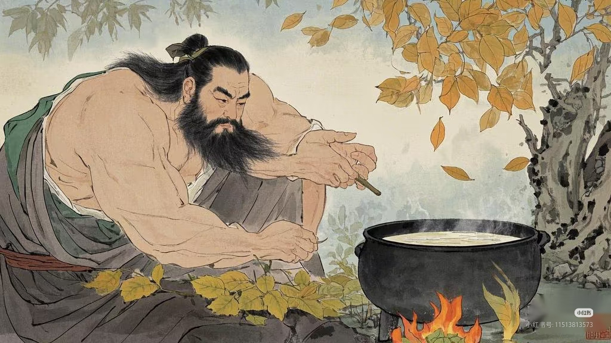
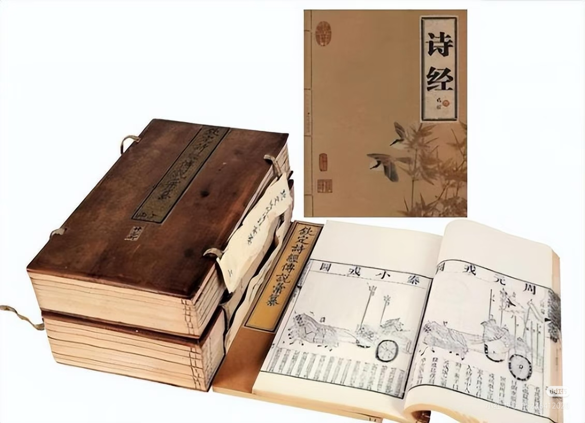
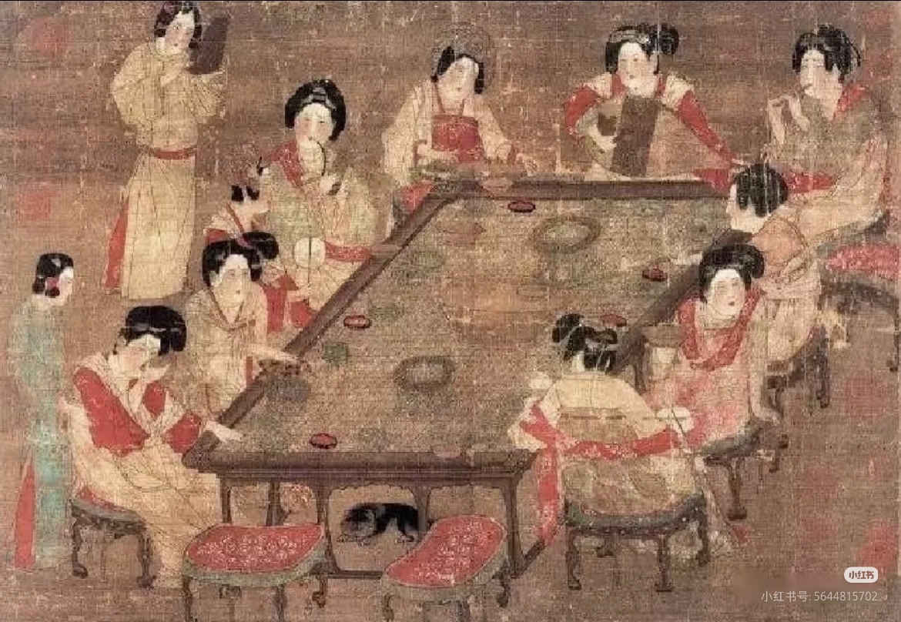
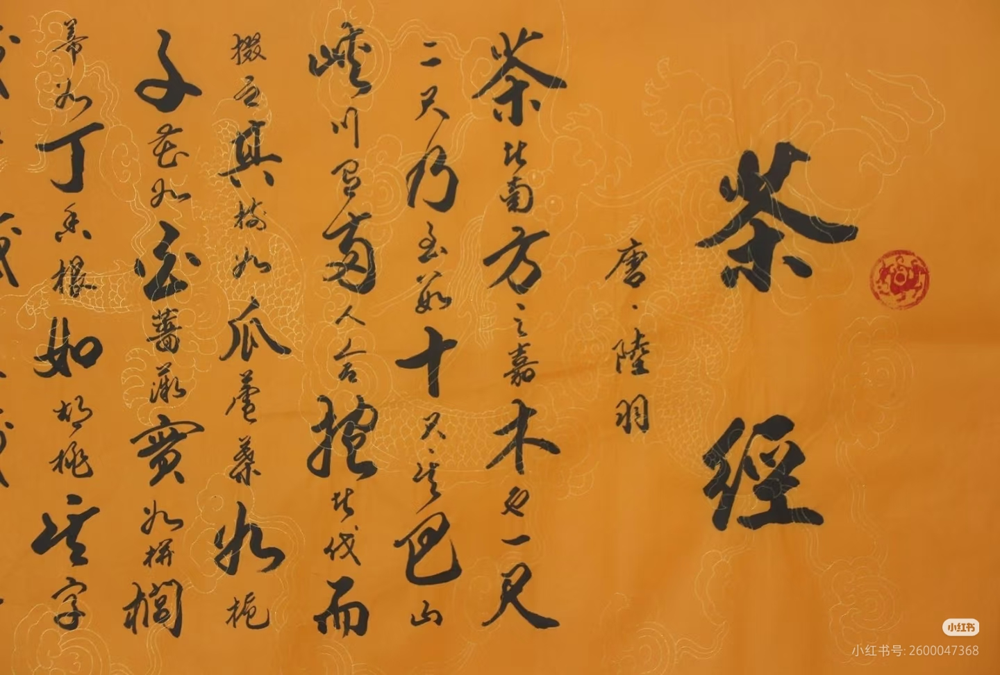
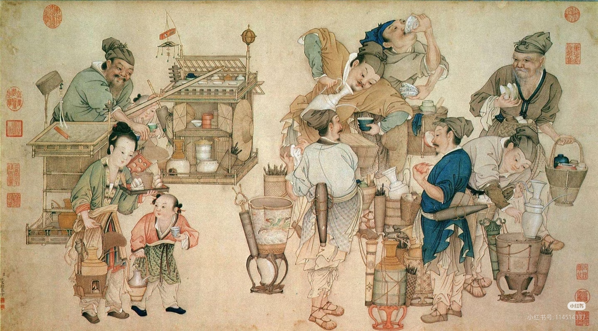
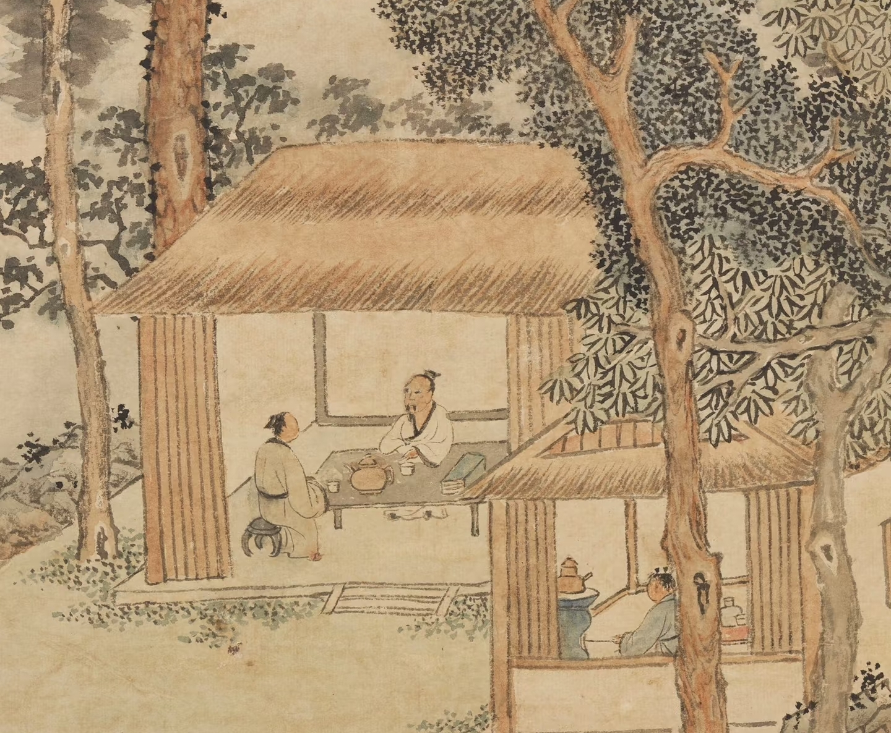
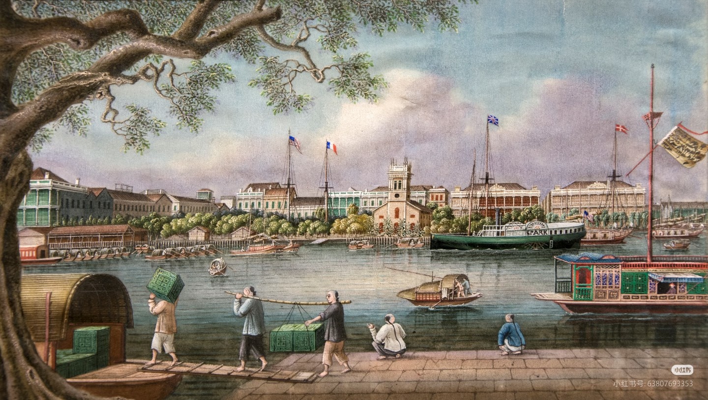
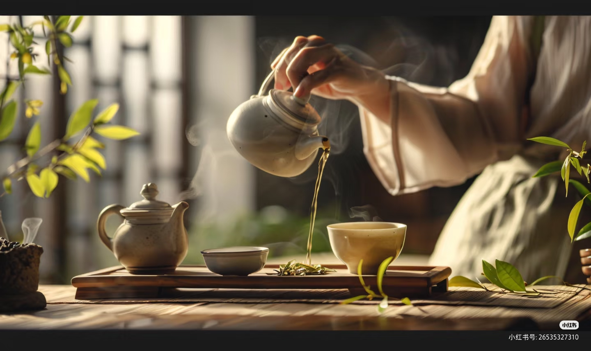

茶的历史
穿越千年，看一片树叶如何影响世界
神农时代（约公元前 2700 年）
茶的发现
传说神农氏尝百草，日遇七十二毒，得茶而解之。茶最初作为药用植物被人类认识。

周朝（公元前 1046-256 年）
茶的早期记载
《诗经》中已有 "谁谓荼苦，其甘如荠" 的诗句，"荼" 即古时的茶字。茶开始从药用走向食用。

秦汉（公元前 221-220 年）
茶的传播
随着统一，茶从巴蜀地区向外传播。西汉时期，茶已成为商品在市场上交易。

唐代（618-907 年）
《茶经》问世
陆羽著《茶经》，是世界上第一部系统论述茶的专著，被誉为 "茶圣"。唐代饮茶之风盛行，茶成为全民饮品。

宋代（960-1279 年）
点茶与斗茶
宋代饮茶方式发展为 "点茶"，将茶末调成膏状，注水击拂出泡沫。斗茶成为文人雅士的社交活动。茶文化达到前所未有的高度。

明代（1368-1644 年）
散茶冲泡
朱元璋下诏废除团茶进贡，改为散茶。冲泡方式从 "点茶" 变为 "瀹饮"（直接用沸水冲泡），更接近现代人的饮茶习惯。

清代（1644-1912 年）
走向世界
中国茶大量出口欧洲、美洲，成为国际贸易的重要商品。英式下午茶文化由此兴起，茶真正成为世界性饮品。

近现代（1912 年至今）
茶文化的复兴
中国茶文化在新时代焕发新生。六大茶类体系确立，茶艺表演、茶道哲学、茶空间美学等蓬勃发展，茶成为健康生活的重要部分。
